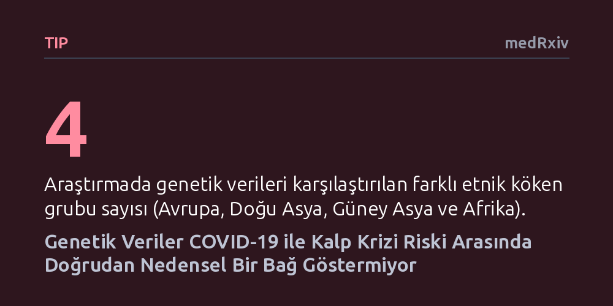

TIP · medRxiv · 2026-10-11
Araştırmacılar, dört farklı etnik kökenden geniş genetik verileri inceleyerek COVID-19 enfeksiyonu ile kalp krizi riski arasında doğrudan nedensel bir bağ olup olmadığını araştırdı. Bulgular, hastalığa yakalanma veya ağır geçirme yatkınlığının kalp krizi riskini nedensel olarak artırmadığını gösterdi.
Hastanelerde gözlenen kalp krizi artışının kalıcı bir genetik yatkınlıktan değil, enfeksiyon anındaki ani fizyolojik sarsıntıdan kaynaklandığını göstererek uzun vadeli risk algısını netleştirir.

Pandeminin başından bu yana hastanelere yansıyan gözlemsel veriler, COVID-19 geçiren bireylerde akut kalp krizi riskinin yükseldiğine işaret ediyordu. Bu gözlemler kamuoyunda büyük bir endişe yarattı ve virüsün kalp damarlarında doğrudan kalıcı bir hasar mekanizması tetikleyip tetiklemediği sorusunu gündeme getirdi. Ancak sadece hastaneye başvuran kişilere bakılarak yapılan gözlemsel çalışmalar, iki durumun tesadüfen mi bir arada görüldüğünü yoksa birinin diğerine gerçekten yol mu açtığını ayırt etmekte yetersiz kalıyordu.
Bir hastalığın diğerine zemin hazırlayıp hazırlamadığını anlamak, hem tedavi protokolleri hem de toplum sağlığı politikaları açısından kritik öneme sahiptir. Eğer virüs kalp krizine doğrudan ve genetik olarak kalıcı bir yatkınlıkla yol açıyorsa, enfeksiyonu geçiren milyonlarca insanın uzun vadeli kardiyovasküler takibe alınması gerekirdi. Bu nedenle bilim insanları, gözlemsel verilerin ötesine geçerek nedensel bir bağın varlığını sınama ihtiyacı duydu.
Araştırmacılar nedensellik sorusuna yanıt bulmak için doğanın sunduğu rastgele dağılımı kullanan Mendelian rastgeleleştirme yöntemine başvurdu. Bu yaklaşım, bireylerin anne ve babalarından rastgele miras aldıkları genetik varyasyonları temel alır. İnsanların genetik kodları doğumda belirlendiği için, sigara içmek, stres veya sosyoekonomik durum gibi sonradan ortaya çıkan karıştırıcı faktörlerden etkilenmez; bu da yöntemi adeta doğal bir klinik deney haline getirir.
Çalışmada Avrupa, Doğu Asya, Güney Asya ve Afrika kökenli geniş insan topluluklarına ait genom çapında ilişkilendirme verileri bir araya getirildi. Araştırma ekibi, COVID-19'u üç farklı boyutta ele aldı: genel enfeksiyona yatkınlık, hastaneye yatış gerektiren durumlar ve yoğun bakım gerektiren çok ağır hastalık tabloları. Bu üç farklı tablonun akut kalp krizi riskiyle genetik düzeyde nasıl kesiştiği gelişmiş istatistiksel modellerle incelendi.
Yapılan kapsamlı analizler, COVID-19'a genetik olarak daha yatkın olmanın veya hastalığı çok ağır geçirme eğilimi taşımanın kalp krizi riskini doğrudan artırmadığını ortaya koydu. Avrupa kökenli bireylerde çok ağır hastalık ve hastaneye yatış genetiği ile kalp krizi arasında ters yönlü hafif bir eğilim sezilse de, bu durum hassasiyet analizlerinde istatistiksel bir anlamlılığa ulaşmadı.
Benzer şekilde, Güney Asya kökenli grupta hastaneye yatış ile kalp krizi arasında zayıf bir ters ilişki işareti görülse de bu da istatistiksel olarak anlamlı bulunmadı; Doğu Asya ve Afrika kökenli topluluklarda ise hiçbir anlamlı ilişki saptanmadı. Yazarlar vardıkları sonucu makalede şu ifadeyle özetledi: "Bulgularımız, farklı etnik kökenlerde COVID-19 yatkınlığı veya şiddeti ile akut miyokard enfarktüsü riski arasında sağlam bir nedensel ilişkiyi desteklemedi."
Bu sonuçlar, COVID-19 hastalarında daha önce gözlenen kalp krizi vakalarının varlığını inkar etmez; ancak bu vakaların arkasındaki mekanizmanın kalıcı bir genetik kader olmadığını gösterir. Araştırmacılara göre, enfeksiyon sırasında görülen kalp krizi artışı, paylaşılan ortak bir genetik altyapıdan değil, hastalığın aktif döneminde vücutta gelişen aşırı iltihaplanma, pıhtılaşma bozuklukları ve oksijen yetersizliği gibi ani fizyolojik süreçlerden kaynaklanmaktadır.
Sonuç olarak, virüse yakalanmış olmak tek başına kişide ömür boyu sürecek kalıtsal bir kalp krizi yatkınlığı yaratmaz. Kalp ve damar sağlığını korumak adına atılacak adımların, kalıcı bir genetik risk vehminden ziyade, akut enfeksiyon döneminde gelişen iltihabı ve pıhtılaşma riskini iyi yönetmeye odaklanması gerektiğini hatırlatır.